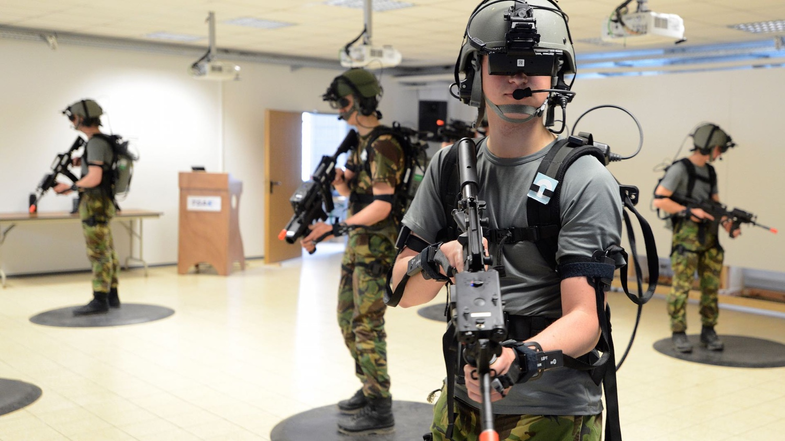

1 / 6

In the mid 1950s cinematographer Morton Heilig developed the Sensorama (patented 1962) which was an arcade-style theatre cabinet that would stimulate all the senses, not just sight and sound. It featured stereo speakers, a stereoscopic 3D display, fans, smell generators and a vibrating chair.
2 / 6

In 1968, Ivan Sutherland and Bob Sproull created the first head-mounted display (HMD) system for immersive simulation applications. Being that it was the first HMD both quality of the interface and realism of the simulation were rather low, and it weighed so much that it had to be suspended from the ceiling by metal cables
3 / 6

Since the year 2000, there has been continued growth in VR technology and is arguably the period with the most tremendous innovation since VR’s inception. In 2001, SAS Cube created the first PC based cubic room that then led to the development of Virtools VR pack, a library pack add-on. After its 2007 release of google Street View, in 2010, google introduced stereoscopic 3D mode for Street View. This allowed users to stand on the street and physically look around the 3D image. It was also in 2010 that 18-year-old Palmer Luckey created the first prototype of Oculus Rift, the famous VR headset. It was the first time a 90-degree field of vision was used, and the new oculus rift headset relied on processing power of a computer to render its visuals. This reinvigorated interest in the VR space.
4 / 6

Virtual reality training is a common use case for VR technologies. It often helps for training exercises that are too rare, too expensive, or too dangerous to be done in real life. Training simulation in the military field fosters the combat skills of small-scale units or single soldiers by simulating actual vehicles, soldiers and combat environment With a VR headset and controllers, trainees are completely immersed in virtual environments. For example, you can have a flight simulator overlaid with a virtual world rendering an actual battlefield for a complete pilot training (this type of virtual reality simulation can be done using TechViz Fusion). All the user’s senses can be stimulated to fully recreate the pilot training.
5 / 6

VR gaming has been dreamed about almost as long as video games (and especially 3D games)have existed. Prior to the development of compact technology, VR gaming used projector rooms or multiple screens. VR gaming control may involve a standard keyboard and mouse, game controllers or motion capture methods. More complex VR rooms may include treadmill floors or similar methods to further the user’s sense of freedom of movement and feelings of immersion within the virtual environment. In other VR gaming setups, the user may be confined to a limited area surrounding a computer but have free range of motion within the area.
6 / 6
Quality VR/AR content brings your product presentation to a new level. It is a cool way to show off your products or services as well as create a much more interactive shopping experience. It allows customers to consume the content in a more immersive environment that creates an emotional connection with them.